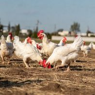
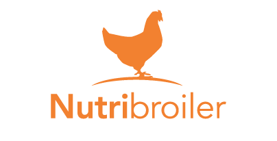
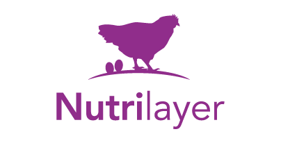
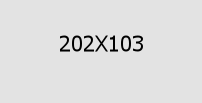
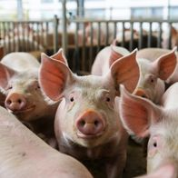
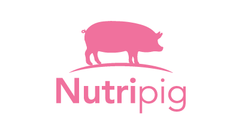
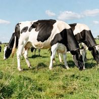
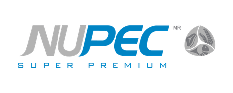

Premezclas con oligoelementos en forma orgánica de alta biodisponibilidad. Cubrimos todas las etapas del ciclo productivo tanto para pollos parrilleros como para gallinas ponedoras y reproductoras.

Premix vitamínico · Pollo parrillero
Línea completa para pollos parrilleros. Cubre los requerimientos de vitaminas y oligoelementos en cada etapa del ciclo con mineralización orgánica. Dosis: 2,5 kg/tonelada.

Premix vitamínico · Gallina ponedora
Premix con minerales orgánicos para todas las etapas de aves de postura. Vitaminas altamente estables al proceso de elaboración del pienso. Dosis: 2,5 kg/tonelada.

Complementos para aves de postura
Líneas complementarias para producción de huevo. Formulaciones específicas para máximo rendimiento productivo en gallinas ponedoras comerciales.
Consultar disponibilidadPreiniciador–Iniciador · Crecimiento–Finalizador
Premezcla avícola con mayor precisión nutricional con mineralización orgánica avanzada.
Consultar disponibilidadCrianza · Postura · Postura con pigmento
Premezcla avícola para crianza, postura y postura con pigmento natural para yema.
Consultar disponibilidad
Desde el lechón, destete hasta la cerda reproductora. Formulaciones específicas para cada etapa con minerales orgánicos de alta biodisponibilidad.

Premix vitamínico · Todas las etapas
Premix vitamínico-mineral para cerdos con 5 etapas productivas diferenciadas. Minerales orgánicos para máxima biodisponibilidad. Dosis: 2,5 kg/tonelada.
Balanceado · Lechones destete
Alimento completo para lechones en etapa de destete. Alta palatabilidad y digestibilidad para el período más crítico del ciclo porcino.
Consultar disponibilidadBalanceados · Inicio y desarrollo
Alimentos completos para las etapas de inicio y desarrollo. Disponibles también en versión concentrado para quienes fabrican su propio balanceado.
Consultar disponibilidadBalanceados · Inicio y desarrollo
Alimentos completos para las etapas de inicio y desarrollo. Disponibles también en versión concentrado para quienes fabrican su propio balanceado.
Consultar disponibilidadBalanceados · Inicio y desarrollo
Alimentos completos para las etapas de inicio y desarrollo. Disponibles también en versión concentrado para quienes fabrican su propio balanceado.
Consultar disponibilidadPremezcla · 5 etapas
Premezcla vitamínico-mineral completa para las 5 etapas del ciclo porcino.
REPRODUCCIÓN
Alimento especializado para sementales porcinos, desarrollado para maximizar su desempeño reproductivo y proteger la fertilidad de los animales más influyentes de la granja.
Consultar disponibilidad
La ganadería lechera es el origen de Nutrisur. Desde 2006 desarrollamos soluciones para la producción de leche en Uruguay, con productos que acompañan cada etapa del ciclo.
Suplemento vitamínico-mineral · Vacas lecheras & carne
Producto estrella de Nutrisur. Suplemento completo para vacas en producción. Nutre y previene deficiencias en los períodos críticos del ciclo productivo.
Solicitar informaciónNúcleo vitamínico-mineral · Vacas lecheras
Núcleo concentrado con alta densidad nutricional para formular dietas de vacas de alta producción. Permite mayor flexibilidad en la confección de raciones.
Solicitar informaciónSuplemento · Período de transición
Formulaciones específicas para el período periparto. Reducen el riesgo de fiebre de leche, cetosis y retención de placenta. Dos versiones para distintos sistemas de manejo.
Solicitar informaciónSuplemento · Alta producción
Para vacas de alta producción y tambo tecnificado. Fórmulas de máxima densidad nutricional para sostener la curva de lactancia y mejorar la condición corporal al secado.
Solicitar informaciónPremix vitamínico-mineral · Bovinos
Premix completo para incorporar en raciones de vacas lecheras. Equilibrio mineral optimizado para producción sostenida y salud reproductiva.
Solicitar informaciónSoluciones para sistemas de cría extensiva, recría y feedlot. Formulaciones que maximizan la ganancia diaria de peso y la eficiencia de conversión.
Suplemento · Bovinos de carne
Suplemento vitamínico-mineral para bovinos de carne en pastoreo o en sistemas semi-intensivos. Cubre deficiencias del forraje y mejora la condición corporal.
Solicitar informaciónSuplemento · Producción intensiva
Formulado específicamente para sistemas de feedlot y engorde intensivo. Maximiza la GDP y la eficiencia de conversión con mineralización de alta disponibilidad.
Solicitar informaciónSuplemento · Vacas de cría
También utilizado en vacas de cría. Previene deficiencias en la época de mayor demanda nutricional (preparto y lactancia temprana).
Solicitar informaciónAmplia gama de productos diseñados para apoyar la salud, el bienestar y el rendimiento animal frente a los retos actuales de producción.
PREMEZCLA
Formulación fitobiótica de ingredientes funcionales y palatables para combatir de manera integral los multiples efectos del estrés calórico. Ganadería lechera y ganadería de carne.
Solicitar informaciónPREMEZCLA
Combinación estratégica de extractos vegetales bioactivos que actúan en el tracto digestivo y el metabolismo de las gallinas y los pollos de engorda.
Solicitar información
A través de Nutrisur, distribuimos en Uruguay la línea NUPECMR de alimentos súper premium para perros y gatos. Más del 90% de digestibilidad, fabricados en México bajo ISO 22000 y validados por SANURENMR — la red de investigación de GRUPO NUTEC®.
Líneas Caninas
Líneas Felinas
¿Por qué +90% de digestibilidad?
Red especializada de investigación en nutrición animal de GRUPO NUTEC®.
Planta exclusiva para petfood con líneas de producción independientes.
Certificaciones internacionales que garantizan inocuidad en cada lote.